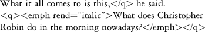

33.
Text Tools
John Bradley
One should not be surprised that a central interest of computing humanists is tools to manipulate text. For this community, the purpose of digitizing text is to allow the text to be manipulated for scholarly purposes, and text tools provide the mechanisms to support this. Some of the scholarly potential of digitizing a text has been recognized from the earliest days of computing. Father Roberto Busa's work on the Index Thomisticus (which began in the 1940s) involved the indexing of the writings of Thomas Aquinas, and arose out of work for his doctoral thesis when he discovered that he needed to systematically examine the uses of the preposition in. Busa reports that because of this he imagined using "some sort of machinery" that would make it possible. Later, but still relatively early in the history of humanities computing, the writings of John B. Smith recognized some of the special significance of text in digitized form (see a relatively late piece entitled "Computer Criticism", Smith 1989). Indeed, even though computing tools for manipulating text have been with us for many years, we are still in the early stages of understanding the full significance of working with texts electronically.
At one time an important text tool that one would have described in an article such as this would have been the word processor. Today, however, the word processor has become ubiquitous both inside and outside the academy and it is no longer necessary to describe its benefits or categorize its applications. Today many people believe that the World Wide Web can be at the center of computing for humanists, and much discussion has focused on the significance of presenting materials on the WWW for a worldwide audience. Although some of the tools I will describe here could greatly facilitate the preparation of materials for the WWW, I will not be writing very much about HTML or the significance of using it. Instead, this article will focus on tools that can manipulate texts in ways that might usefully support the development of scholarship on those texts rather than merely prepare and present them.
Some of the tools described here have been developed specifically to support humanities scholarship. The intellectual origins of many in this group flow directly from the word-oriented work of Father Busa and other early researchers, and these ones tend to be mainly designed to support a certain kind of word- or wordform-oriented inquiry. Another important group of tools described later were not developed by humanists and have a broad range of applications in general computing, although they have proven themselves to be powerful tools when applied to scholarly tasks. The chapter finishes with a brief description of TuStep – a system developed by Wilhelm Ott that is potentially useful in a range of applications within and outside the humanities, but was developed with a humanities focus.
Not surprisingly, given their very different origins, the two groups present very different challenges to the humanities researcher who is beginning to use them. The first group of tools, generally designed to support text analysis, are relatively straightforward to understand once one is operating within a tightly defined problem domain. The general-purpose tools, however, are not so easily categorized, and can perform a very broad range of tasks on a text. Because they are not focused on a specific problem domain, as the "Text Analysis" tools are, they contain very abstract components, and the difficulty for the beginner is to understand whether, and then how, these abstract elements can be applied to any particular problem.
Those who begin with the tools that are specially developed for textual analysis or critical work often find that they wish to do something that goes beyond what their software does – for example, apply a statistical program to some materials that the software has given them. Often the form of the data generated by their first program is different from that needed by the second program. As we will see, one of the important tasks of the general-purpose tools described later in this chapter is to provide ways to bridge these gaps.
Tools to Support Text Analysis
Paradoxically, the task of writing general-purpose software is highly specialized; it is also both costly and difficult. Perhaps for this reason most humanities computing software available "off the shelf" (with the exception of TuStep) performs a relatively simple set of functions. Of those pieces of software that do exist, many are designed to assist with text analysis.
Wordform-oriented tools
Most of this section describes software that supports the analysis of texts through word-forms, and relies on the KWIC (Key Word In Context) and related displays. These tools are the most accessible for new users, and often are taught to students. See, for example, Hawthorne's (1994) article for examples of student uses of TACT. An ancestor of many of the currently available wordform-oriented programs is the Oxford Concordance Program (OCP), with which they share a number of concepts.
All the "wordform" programs described in this section provide a relatively limited set of operations. Nonetheless, there are reports of them being useful in a broad range of text-research activities, including:
• language teaching and learning;
• literary research;
• linguistic research, including corpus linguistics, translation and language engineering, supported at least at a relatively basic level (although see the next paragraph);
• lexicography; and
• content analysis in many disciplines including those from both the humanities and the social sciences.
As the category suggests, they all operate on wordforms and to work they must be able to automatically collect the wordforms from the provided texts. Most of the programs described here are thus oriented towards alphabetic languages, and allow one to identify both the characters that are acting as letters in the target language, and to identify characters that may appear in a word but are not letters (such as a hyphen).
At the center of most of these programs is the word list – a list of all wordforms that occur in the processed text, generally shown with a count of how many times that wordform occurred and usually sorted in alphabetical order or by frequency, with the most frequently occurring forms listed first. In most programs, users can ask to view information about a wordform by selecting it from this list, e.g., "show me all occurrences of the word 'avuncular.'" In some programs one types in a query to select the words one wants to view. Wildcard schemes in queries can support word stemming, e.g., "show me all occurrences of the word beginning 'system,'" and some allow for the wildcard to appear in other places than the end, thereby allowing for queries such as "show me all occurrences of words ending in 'ing.'" Some pieces of software allow for selection based around the occurrence close together of one or more wordforms. An example of selection by phrase would be "show me where the phrase 'the* moon' occurs" (where "*" means any word). A collocation selection query would allow one to ask "show me where the words 'moon' and 'gold' appear close together."
After you have selected wordforms of interest the programs are ready to show results. All the tools offer a KWIC display format – similar to that shown below – where we see occurrences of the word "sceptic" in David Hume's Dialogues Concerning Natural Religion.
Sceptic (11)
| [1,47] | abstractions. In vain would the | sceptic make a distinction |
| [1,48] | to science, even no speculative | sceptic, pretends to entertain |
| [1,49] | and philosophy, that Atheist and | Sceptic are almost synonymous. |
| [1,49] | by which the most determined | sceptic must allow himself to |
| [2,60] | of my faculties? You might cry out | sceptic and railer, as much as |
| [3,65] | profession of every reasonable | sceptic is only to reject |
| [8,97] | prepare a compleat triumph for the | Sceptic; who tells them, that |
| [11,121] | to judge on such a subject. I am | Sceptic enough to allow, that |
| [12,130] | absolutely insolvable. No | Sceptic denies that we lie |
| [12,130] | merit that name, is, that the | Sceptic, from habit, caprice, |
| [12,139] | To be a philosophical | Sceptic is, in a man of |
A viewer uses the KWIC display to see what the context of the word says about how it is used in the particular text.
The KWIC display shown above also indicates where in the text the word occurs: the first of the two numbers in square brackets is the number of the dialogue, and the second is a page number in a standard edition. This information comes from textual markup. Markup can often provide useful information about the text's structure, and some software allows the markup to be identified and used in several ways:
(a) As shown in the KWIC display above, it can be used to indicate where a particular word occurrence occurs in the text – e.g., "paragraph 6 of chapter 2", or "spoken by Hamlet."
(b) It can be used to select wordform occurrences that might be of interest – e.g., "tell me all the places where Hamlet speaks of a color."
(c) It can be used to define a collocation range – e.g., "show me all the words that occur in the same sentence as a color-word."
(d) It can be used as the basis for a distribution – "show me how a word is used by each speaker."
(e) It can be used to delimit text to be ignored for concording – e.g., "do not include text found in the prologue in your index."
Although working with markup is clearly useful, support for XML/SGML markup is poor in current wordform programs. None of the wordform-oriented software described here can make good use of the full expressive power of TEI (the Text Encoding Initiative) XML markup, and some cannot even properly recognize the appearance of markup in a text document so that they can at least ignore it. A couple of the programs recognize a rather more simple form of markup – called COCOA markup after the piece of concordance software (COCOA, for count and concordance generation on the Atlas) for which it was first designed. A typical COCOA tag might look like this: "<S Hamlet>." The angle brackets announce the presence of a COCOA tag, and the tag's content is divided into two parts. The first part (here, an "S") announces the kind of thing being identified – "S" presumably stands for "speaker." The second part announces that starting with the spot in the text where the tag has appeared, the Speaker is "Hamlet." Although perhaps at first glance the COCOA tagging scheme might remind one a little of XML or SGML markup, it is technically quite different, and is structurally largely incompatible with texts marked up in XML/SGML.
Some wordform software offers other kinds of displays for results. A distribution graph, for example, could show graphically how the word use was distributed through the text, and might allow the user to see areas in the text where usage was concentrated. Some programs provide displays that focus on words that appear near to a selected word. TACT's collocation display, for example, is a list of all wordforms that occur near to selected words, ordered so that those with proportionally the most of their occurrences near the selected words (and therefore perhaps associated with the selected word itself) appear near the top of the list.
Some of the programs allow for some degree of manual lemmatization of wordforms – the grouping together of different forms that constitute a single word into a single group, although none of the wordform-oriented tools include software to do this task automatically. Stemming with wildcards can help to lemmatize many words in languages where the initial word stems can be used to select possible related wordforms. Several programs, including Concordance, WordSmith Tools, and TACT, allow one to store a list of wordforms that belong in a single lemma in a separate file and automatically apply these against a text. A group of words for the verb "to be" in English would contain the various wordforms that make it up: "am, are, is, be, was, were", etc. By applying this list the software would group these various wordforms under a single heading: "to be." Of course, the task of doing a proper lemmatization is often more complex than this. For one thing, one must separate homographs (a single wordform that might have several different meanings, such as "lead" in English). To allow the machine to do this task automatically would require it to understand the use of each word occurrence in its particular context -something outside the capabilities of any of the software reviewed here. TACT, however, allows the user to review the groups created by the simple wordform selection process and individually exclude wordform occurrences – thereby allowing the separation of homographs to be carried out manually, although at the cost of a significant amount of work.
The following paragraphs outline some of the important characteristics of the pieces of wordform-oriented software that are available today. (Only software readily available at the time of writing will be discussed – thus software such as OCP or WordCruncher, important and influential as they were in their day, are not described.) There are many differences in detail that might make one tool better suited to a task at hand than another. If you choose and use only one, you may need to direct your investigations to suit the program's strengths – a case of the tool directing the work rather than the other way around.
Concordance 3.0 is a Windows-based program written by R. J. S. Watt, who is Senior Lecturer in English at the University of Dundee. An evaluation copy (30 days) of the software is available at <http://www.rjcw.freeserve.co.uk>, with information about current prices. As the name suggests, the program focuses on providing a good KWIC Concordance generation and display engine. The user loads a text, selects words from the resultant word list (displayed on the left) and immediately sees a KWIC display on the right. The program supports some degree of lemmatization, and makes limited use of COCOA-like tags. I found its Windows interface quite easy to use. Concordance has been used with languages written in a range of alphabets. Furthermore, Professor Marjoie Chann, Ohio State University, reports success in using Concordance 3–0 even with Chinese, Japanese, and Korean texts on Windows 2000/XP. See <http://deall.ohio-state.edu/chan.9/conc/concordance.htm> for details.
Concordance 3–0 has the ability to transform its concordance into what becomes a large number of interconnected HTML pages that together could be made available on the WWW – a "Web Concordance." The resulting web pages present the full KWIC concordance, with links between the headwords in one frame, and the KWIC contexts in another. In the sample text that I tried (0.127 MB in size, containing about 23,300 words) the resulting concordance website was 7.86 MB, and contained 204 interlinked HTML documents.
MonoConc and ParaConc is software developed by Michael Barlow at the Department of Linguistics, Rice University. See <http://www.ruf.rice.edu/~barlow/mono.html>, and A Guide to MonoConc written by Barlow at <http://www.ruf.rice.edu/~barlow/mc.html>. MonoConc is sold by the Athelstan company (Houston, Texas). With MonoConc you enter a search string to select words and it then generates a KWIC concordance. The search query language supports various kinds of wildcards, so that, for example, "speak*" will select all words beginning with "speak." There is also a query specification language (similar to regular expressions) that provides a more sophisticated pattern-matching capability. MonoConc also provides a way of sorting the KWIC display by preceding or following words – an option that causes similar phrases involving the selected word to be more evident. Like other programs described here, MonoConc can also generate some wordform frequency lists. ParaConc provides similar functions when one is working with parallel texts in more than one language.
TACT is a suite of programs developed first by John Bradley and Lidio Presutti, and then somewhat further developed by Ian Lancashire and Mike Stairs, at the University of Toronto. The software was developed in the late 1980s and early 1990s and presents a DOS, rather than Windows, interface. It is still used, in spite of this limitation, by a significant user community. The software is available free from <http://www.chass.utoronto.ca:8080/cch/tact.html> – however, there is no manual for it available from that site. Instead, a user's guide – containing both the suite of programs and a selection of electronic texts on CD-ROM – can be purchased from the Modern Language Association (MLA).
Although TACT's DOS-based interface is difficult to learn for users familiar with Windows, TACT remains popular with some users because it presents a relatively broad range of functions within the general wordform-oriented context described above, including the most sophisticated support for textual markup and word collocation of any of the programs described here. TACT works immediately with texts from the standard western European languages, and can be extended to work with other languages based on the Roman alphabet, and with classical Greek, although how to do this is unfortunately poorly documented. Compared to other programs described here, TACT is limited in the size of texts it can handle. Although users have reported working successfully with texts as large as the Bible, that is roughly TACT's upper limit. New users will find the system difficult at the beginning because of the DOS interface, the need to purchase the User's Guide to receive any written help, and the lack of technical support. TACTweb (http://tactweb.humanities.mcmaster.ca/) allows TACT's textbases to be searched by queries over the WWW.
WordSmith Tools Version 3–0 is a suite of programs developed by Mike Scott (Department of English Language and Literature, University of Liverpool) and now distributed by the Oxford University Press. A version may be downloaded for evaluation from <http://www.oup.co.uk/> or the author's website at <http://www.liv.ac.uk/~ms2928/>. Word-Smith Tools consists of six programs, one of which is a Controller component – used to invoke the others – and several others provide facilities for the basic text editing of large text files, and will not be described further here. Most users will begin by pointing the WordList component at one or more text documents to generate a word list. From there the user can select some words to form the basis for KWIC concordance, displayed in the Concord component. An unusual feature of WordSmith Tools is its KeyWords component. This allows the word list generated by your text to be compared with a control word list (for example, a word list generated from the British National Corpus is available over the WWW for this purpose), and the words that occur proportionally more frequently in your text than in the control text are emphasized in the resulting display.
Although WordSmith Tools has only limited facilities to handle text with markup, it provides a richer set of functions to support statistical analysis than the other programs mentioned here. WordSmith Tools are Windows-based, but the modular nature of the program, where the word list, concordance, and keyword functions are packaged in different, albeit linked, components, made the software slightly more difficult for me to master than some of the other programs mentioned here.
Readers of this chapter may have noted that all the software mentioned so far runs on the IBM PC and/or Windows. Users of the Apple Macintosh have a smaller number of programs to choose from. The AnyText search engine, marketed by Linguist's Software, is described as "a HyperCard -based Full Proximity Boolean Search Engine and Index Generator that allows you to create concordances and do FAST word searches on ordinary text files in English, Greek and Russian languages." The software was originally designed to work with Biblical text, and it can be purchased by itself, or with one or more versions of the Bible included (at a higher cost). More information is available at <http://www.linguistsoftware.com/atse.htm> – but it should be noted that HyperCard itself is no longer supported in the current generation of Macintosh operating systems (OS X). D. W Rand's Concorder Version 3–1 is available free of charge, although a printed manual is sold by Les Publications CRM of the Universite de Montreal, Canada. More information about Concorder can be found at <http://omega.crm.umontreal.ca/~rand/CC_an.html>.
Several sets of tools developed for linguistics-oriented research support more sophisticated word-oriented research. See, for example, the GATE system developed at the University of Sheffield's Natural Language Processing Group at <http://gate.ac.uk>, or TIPSTER, developed with the support of various agencies in the USA (http://www.itl.nist.gov/iaui/894.02/related_projects/tipster/). As powerful as these environments generally are, they have been developed in a technical culture that is largely foreign to the humanities, and they require both extensive knowledge of linguistics and computing environments such as Unix to operate. They are not discussed further in this chapter.
Qualitative analysis
Software developed for qualitative analysis within the social sciences provides a very different view of how computers can assist with the analysis of texts. Here the focus is on software that allows the user to explicitly label and organize thematic categories that they discover while reading the text. Three widely used pieces of software that work in this way are Nud*ist, NVivo (both from QSR International: <http://www.qsr.com.au/>) and Atlas.ti from Scientific Software Development, Berlin (<http://www.atlasti.de/intro.shtml>). An interesting review of text analysis software that comes from this social sciences perspective is provided in the book A Review of Software for Text Analysis (Alexa and Zuell 1999). An article describing the use of these tools for research can be found in Kelle (1997).
Text collation
The use of computers to support the collation of textual variants is almost as old as the wordform work described earlier in this chapter. Although the early belief that collation was largely a mechanical task has been shown to be false, much useful work has been done in this area, nonetheless. Perhaps the best known tool available to support collation is Peter Robinson's Collate program for the Macintosh. You can read more about it at Getting Started with Collate 2, from <http://www.cta.emu.ac.uk/projects/collate/res.html>.
Wilhelm Ott's TuStep system has components in it that are specifically designed to support collation and the broader task of the preparation of a critical edition. See the further discussion about TuStep later in this chapter.
A Text Tool for XML: XSLT
Up to now we have focused primarily on tools specifically developed to support certain kinds of research in the humanities. If your work is focused on these particular tasks, then you may find many of your needs met by these tools. However, for many of us, the work we do with a text is not so tightly focused, and these tools will rarely be sufficient to support all the work we wish to do.
In this section we will describe a set of tools built on XSLT that are available to work with XML markup. The Text Encoding Initiative (TEI) has made it evident that many of the things in a text that are of interest to textual scholars can be usefully identified with SGML or XML markup. However, once these things are marked up this is rarely the end of the story – after all, one puts the markup in so that one can do further work with it later. These days one often wants to publish such materials on the WWW and, of course, the resulting website would contain the base text in HTML. Often, however, the markup can provide the source for various supporting index documents that provide a set of alternative entry points into the text itself. The automatic generation of such indices and of the original text in HTML is well supported by XSLT.
XSLT stands for "Extensible Stylesheet Language: Transformations" (compare with XML: "Extensible Markup Language"). It is one of a pair of standards that are named XSL (Extensible Stylesheet Language). The second part of XSL, XSLFO – "Extensible Stylesheet Language: Formatting Objects" – provides a language describing how a text should be laid out for display – usually for the printed page. The XSLT language is developed by the World Wide Web Consortium (W3C: <http://www.w3c.org>), a group of individuals and corporations who have taken on the task of maintaining and developing standards for the World Wide Web.
The emphasis in XSLT is on transformation, and today the principal use of XSLT is the transformation of an XML document into HTML for presentation on the WWW. The virtues of using a form of XML more complex and specifically adapted than HTML as the initial markup scheme for a text have been extensively described elsewhere in this book, and I will not repeat them here. However, if one is to present material on the WWW then (at least today) one needs to present the material in HTML, and an approach that consistently transforms any well-formed XML into HTML is very valuable. Often a single tag in XML needs to be transformed into a set, sometimes a complex set, of HTML tags. In XSLT one describes this transformation once, in what is called in XSLT a template. An XSLT processor can then apply the specification given in the template to all places in the original text where it fits. Normally the transformation process requires the specification of many different templates. Thus, one groups the set of templates one needs in a single document, called an XSLT stylesheet.
Here is a simple example that will give a little of the flavor of XSLT. Suppose the original text is marked up in TEI (the example, slightly modified to be in XML rather than SGML, is from section 6.3–2.2. "Emphatic Words and Phrases" of the TEI P3 guidelines):  For presentation in HTML, the q element needs to be transformed so that the contained text is surrounded by quote marks. The empb element, when the rend attribute is set to "italic", needs to be transformed into HTML's / element. The following two templates, which would, of course, be included with many others in a complete XSLT stylesheet, would accomplish this: XSLT is itself written in XML. In this excerpt we see two XSLT template elements. Each has a match attribute which specifies where the particular transformation contained therein should be applied. The match attribute for the first template element simply asserts that this template is applicable for all q elements in the input text. The match attribute in the second template asserts that it is applicable to all emph elements which have their rend attribute set to italic. The content of each template element describes what should be generated as output from the transformation process. In both template elements you can see the apply-templates element which, in effect, says "place the matched element's content here while also applying their templates as appropriate." In the first template, then, the content is simply surrounded by quote marks. In the second template, the content is surrounded by HTML's / element. If these transformation templates were applied to the text above, then, the resulting output would be: Although this example gives a little bit of the flavor of what XSLT can do, by itself it barely hints at the kinds of transformations that can be expressed in XSLT. With an XSLT stylesheet, for example, it is possible to specify a transformation that reorganizes and duplicates the content of some elements so that, say, each section heading in an input document appears in two places in the output – once as heading for its respective section, but also at the front of the document as an element in a table of contents. Material can also be sorted and grouped in different ways (although grouping is rather complex to express in the XSLT version 1). It is possible, for example, to write a transformation stylesheet that scans an XML document looking for references to people that have been tagged using TEI's "name" tag: (e.g., from TEI P3 guidelines section 6.4.1, slightly modified): XSLT can be used to select all material in name tags and generate an index from them. All the references to "de la Mare, Walter" and to the places "Charlton" and "Kent" could be grouped together under their respective headwords, and links could be generated below each heading to take the user from the index to the spots in the text where the references were found.
Examples so far have emphasized the use of XSLT to generate output in HTML for making material available on the WWW. However, XSLT is designed to produce output in other XML formats as well as HTML. As XML becomes the scheme of choice for feeding data to many programs, it is likely that XSLT will be used more and more to transform one type of XML markup into another. For example, suppose you had a text with all the words tagged, and you wished to perform a statistical calculation based, say, on the number of occurrences of the wordforms in different chapters, one could write a (complex) stylesheet that would locate the words, count up the number of occurrences of each wordform in each chapter, and generate a document containing this information. If the statistical analysis program accepted data of this kind in XML then your stylesheet could write out its results in the XML format your statistical program wanted.
Learning XSLT is difficult, particularly if you wish to take advantage of its more advanced features. Jeni Tennison's Book Beginning XSLT (Tennison 2002) provides a thorough introduction to many features of XSLT and is understandable to the non-programmer, although one does have to put up with examples drawn from the processing of television program listings! Michael Kay's XSLT: Programmer's Reference (Kay 2001) is, as the name suggests, a complete, in-depth review of XSLT and the software that supports it, and is aimed at a rather technical audience. A search on Google for "XSLT Tutorials" will find many online tutorials. A number of learning resources are also listed at <http://www.xslt.com/resources_tutorials.htm>.
There are several XSLT transformation tools available, and all the ones described here are free.
Microsoft's MSXML (XML Core Services) contains an XSLT processor for Windows and is incorporated inside the company's Internet Explorer (IE) browser. If you send IE an XML document with an XSLT stylesheet, it will transform the XML within the browser and present the display as if the resulting HTML document had been sent instead. Microsoft was much involved in the development of XSLT, and until Internet Explorer 6, the processor provided was not compatible with the now-standard version of XSLT. Hence, be sure that you are using the latest version. Information about MSXML, and a download package to set it up on your Windows machine can be found at <http://msdn.microsoft.com/xml>.
There are several XSLT processors available that run separately from a browser. To use one of them you would give your XML document and XSLT stylesheet to it, and it would save results of the transformation into a file on your hard disk. HTML files generated this way would then be made available using any web server, and by transforming the documents in HTML before serving them, you allow any web browser to view them. The two most widely used XSLT processors are SAXON and XALAN. Both these XSLT processors are most readily run on a Windows machine from the DOS prompt. You will need to be familiar with the basics of a DOS window in order to be able to use these processors effectively.
Michael Kay's SAXON processor (<http://saxon.sourceforge.net/>) is considered to be very highly conformant with the XSLT standard. Saxon versions up to 6.5.2 have been packaged in an "Instant Saxon" format that runs readily on many Windows machines, and is relatively easy to set up and use. It is packaged in a ZIP file on the Saxon website, and setting it up involves only unzipping the two files it contains into an appropriate directory on your computer. Once I had unzipped the Saxon program from the ZIP file I was immediately able to use it with a Hamlet text and stylesheet by starting a DOS/ Command window and typing the command: (which asked SAXON to read an XML document in hamlet, xml, and an XSLT stylesheet in hamlet.xsl and to generate as output a file hamlet.htm). The ZIP file contains an HTML document that describes how to invoke the Saxon program in some detail. A version of SAXON is also available which operates with the support of Sun's Java system. If you are familiar with Java, you might find it as easy to use this version instead.
XALAN, from the Apache Software Foundation, is another widely used XSLT processor. It comes in two versions. One version, implemented in Java, can be found at <http://xml.apache.org/xalan-j/index.html>, and requires you to also set up Sun's Java system on your computer. The second version (at <http://xml.apache.org/xalan-c/index.html>) does not require Java, but seems to be a less complete implementation of XSLT.
Macintosh OS X users who are able to set up Java on their machines in the background Unix environment that underpins OS X will be able to use XALAN or SAXON on their machines.
Perl and TuStep: General Purpose Text Manipulation
In the first section of this chapter we described tools designed to support particular kinds of text-oriented tasks. The section on XML introduced tools that are potentially much more general-purpose. In this section we come to the tools that could be applied the most broadly, and we will be describing two "toolkit environments" that at first may seem quite different: Perl and TuStep. By the end of the chapter we will have shown some of the ways in which they are also similar.
Perl
Perl was created by Larry Wall in 1987 to respond to a need to be able to perform complex administrative-oriented text processing and report generation of data on Unix systems. Perl was so successful that it soon became the tool of choice for getting all sorts of things done in the Unix environment, and it eventually spread from the Unix world to many other computing environments. It has become (in Andrew Johnson's words) "the tool to use for filling gaps everywhere." Perl is good at reading, processing, transforming and writing plain text. If you have ASCII data that come out of one program in one format, and you want to feed them into another program that requires a slightly different format, then Perl might allow you to quickly develop the transformation you need in a matter of minutes. We will introduce Perl here, but other languages such as Python can do similar work.
Perl is a programming language, and as such shares some of its characteristics with other programming languages – including a syntactical structure that is broadly similar to several important ones. Thus, those who are familiar with other widely used languages such as Java or C will start off already knowing something of how to write Perl programs. This means that for many computing professionals, Perl is "easy to learn." However, if you do not have a programming background, you will find that you will not be able to draw in the years of training and experience that allow Perl to be "easy to learn" for this community. Instead, initially you are likely to find learning to program in Perl slow-going. Make friends with a programmer!
Filling of gaps – Perl's strength – often involves the creation of small pieces of throwaway software specifically tailored for a task at hand. When one knows how to write Perl, one can often throw a little program together to do something simple in a matter of minutes. The price for this informal nature of the language is sometimes paid in performance – the program might take longer to run than a carefully written program to do the same task in C would take – however, the C program to do the same job might take a day to write.
To help introduce Perl, I will describe a bit of the Perl programming I did for Willard McCarty's Onomasticm of Ovid's Metamorphoses. In this project, McCarty has marked up some aspects of personification in the Metamorphoses by a tagging scheme of his own invention. Here is an example from his text: These seven lines represent one line from book 13 of the Metamorphoses. The first line, above, is the actual Latin text of Ovid's poem. The remaining six lines represent the tagging that McCarty has added. Most of the lines of poetry, like this one, have a number of tags attached to them. Each tag is surrounded by brace brackets "[" and "]", and the contents are divided into three parts. The first part (in the first tag "on") categorizes the kind of personification – here the individual is personified by being given a person-like attribute. Tags beginning with "v" represent personification through a verb. The second part (here "Achilles") identifies the person/god being talked about, and the third part (here "[arma] optima") links the tag to words in the text. Tags can be more complex, but this is sufficient for our purposes here.
One obvious way to transform this text and make the tagging very useful would be to turn it inside out – producing indices based around the tags, producing something that looks like this (here showing a fragment from the index of Attributes): You can see the reference to Achilles arma optima from line 13–40 in the second line of the Arma/Achilles entry. The indices were represented as a set of linked HTML pages, with references to the poem acting as links. One can use the indices to first get an overview of the kind of attributes that appear across the entire text, and can then use the index to review all the occurrences in the poem.
Writing the Perl code to transform this tagged text into these indices was, of course, significantly more than a 10-minute job, and it is beyond the space we have here to begin to analyze the processing in any detail. However, a small example of Perl coding will give you the flavor of what working with Perl is like.
An important component of Perl is its regular expression processor. Regular expressions provide a way to express relatively complex patterns to select and pull apart text for further processing. The expression: uses the regular expression operator sequence ".*?" and ".*" to specify "any sequence of characters." This pattern matches the form of all the tags in McCarty's text: a "{" followed by any sequence of characters, followed by a "/", followed by any sequence of characters, followed by a ":", followed by any sequence of characters and ending with a "}".
If we put parentheses around the "any sequence of characters" in this expression, then Perl will make available for further processing the component of each specific text string that matched the pattern. Thus, the sequence: if applied against the sequence "[on/ Achilles: [arma] optima]" would have Perl identify "on" as the first part, "Achilles" as the second part, and "[arma] optima" as the third part, and make those subcomponents available to the rest of the program for further processing. Here is the same regular expression as it might be used in a bit of Perl code: The example has been slightly simplified from what was actually used. Even then one can see the formal nature of the Perl language, and perhaps get a sense of the challenge it presents for non-programmers to learn. The first line says "fetch a new line of input from the input file and do the following chunk of Perl code (enclosed in '[]' s) for each line." The second line says "assign the line of input you read in the first line to $txt, and chop off any ending newline character that you find." The third line says "if the string of characters in $txt matches the given pattern (you can see the pattern we described above embedded in this line), do the lines enclosed below within '[]' s." The fourth line asks Perl to save the first bit of the matched regular expression in $code, the second bit in $name, and the third bit in $text. The code would continue with instructions that made Perl do something useful with the chunks of the tag in $code, $name, and $text.
During my analysis of the task of transforming the tagged text into a set of linked indices, it became evident that the process to generate the separate indices was largely the same for each index, albeit using different data by selecting different tags from the tagged text. Thus, it became clear that the entire processing could be written as a small set of separate modular programs that could be directed to each appropriate tagset in turn. We chose, then, to apply Perl to the task of transforming the marked-up text into indices (expressed as collections of HTML pages) by applying a modular approach – breaking the transformation tasks into a number of smaller steps, writing Perl code for each one of the bits. Then, by combining them together in the correct order, the entire task would be performed.
For example, a small program we called text2htm.pl transformed the text and tags into a set of HTML documents. A small module was also written (called tagproc.pl) that extracted data from the tags and stored them in a large table-like structure which would be used, and added to, by the other processing Perl programs that worked on the material. These two programs only needed to be run once. A set of three Perl scripts then did the bulk of the work of transforming the tabular data derived from the tags into a particular index presentation (divided into a number of separate HTML pages) you see above. Two further scripts were also used during the generation of each index to create two kinds of navigational aids for the index. Thus, after the first two programs were run, the other five could be used in sequence for each of the three indices that were to be generated.
When the Perl scripts were ready, it was a simple matter to record the sequence in which they should run and what data they should process in a small DOS batch file. When this has been done the process of transforming the entire text with its thousands of tags into the integrated collection of several thousand HTML pages could then be performed by typing only one command. When the batch file was invoked, it was then a matter of simply waiting for the couple of minutes while the computer worked its way through the batch file and Perl scripts to generate the completed version.
The writing of the Perl scripts to work over the material was not a trivial matter. However, because they could be packaged up and invoked in such a simple manner, they allowed McCarty to quickly generate a new version of the reference website for his materials as often as he liked.
Getting started with Perl
Perl is free software. It was originally developed for Unix systems and is nowadays provided as a built-in tool in systems like Linux. The ActiveState company (http://www.activestate.com) has produced the most popular (free) version of Perl for Windows machines. Versions of Perl have been available on the Macintosh for several years (see, for example, MacPerl), although until OS X (which is Unix-based), they were generally incomplete implementations.
Development of Perl is, these days, a worldwide phenomenon. There is not only continued work to enhance and further develop the basic Perl language, but there is a substantial number of developers who develop Perl modules that allow the Perl programmer to do tasks other than simply process text files. The DBI module, for example, provides a standard way to allow a Perl script to connect to and extract data from a relational database. There is a set of XML modules that allow XML files to be manipulated in Perl programs. Indeed, among the thousands of modules now available it is possible to find one that will help you apply Perl to almost any kind of computer data now available, including material available over the Internet. The CPAN website (<http://www.cpan.org/>) is the usual place to go for information about all the modules that people have written. For Windows Perl users, the ActiveState company maintains a set of these modules specially packaged up for use on Windows, and allows you to download any of them and set them up for free, simply by invoking their "ppm" program and asking for them by name.
Perl, like any full-function programming language, is difficult for non-programmers to learn, and most books and online tutorials that purport to provide an "easy" introduction to Perl are, in fact, written for the programmer audience. Andrew L. Johnson's book Elements of Programming with Perl (Johnson 2000), however, provides an introduction to Perl programming for non-programmers, and is recommended for this purpose.
TuStep
Willhelm Ott's TuStep (Tubingen System of Text Processing Programs) system has a long history. The software that developed into TuStep was begun in 1966, and the first version of TuStep that was made available under that name appeared in 1978. It is still in use today – extensively at Tubingen and in other centers in Germany, and in a number of other places in the world – for the manipulation of texts for all sorts of scholarly purposes. TuStep consists of a set of 45 commands that operate in an environment containing a text editor and a macro program. Ott describes the task domain for his system as "textdata processing", and describes what he means by this in the introduction to the English version of the TuStep manual:
These basic operations of textdata processing (and the corresponding TUSTEP programs) encompass functions that can be generally characterized as follows: Collation of different text versions; correcting not only in the interactive Editor mode, but also with the use of prepared (or automatically generated) correction instructions; breakdown of text into user-defined elements (z. B. semantic patterns); sorting text elements or lengthy units of text according to a number of different alphabets and other criteria; Generating an index by compiling sorted text-elements; Processing textdata according to user-defined selective criteria, replacing, moving, enhancing, concluding and comparing text, calculating numerical values contained in the text (e.g. calender dates) or those which can be determined from the text (e.g. the number of words in a sentence), and output in various formats, including those required by other operating systems (e.g. SPSS for statistical evaluation).
(1993: 8)
TuStep, then, consists of a large number of rather abstract processes that can be instructed to perform a large number of individual operations on a set of text files. The processes are designed to be combined together in a sequence to perform a large number of useful tasks. The sequence of operations can then be stored in a command file and subsequently reapplied at any time. One of TuStep's components is a high-quality typesetting program which is controlled by a command language that can be generated by other elements of the system, and which is capable of producing letterpress-quality printing – indeed a significant use of TuStep is in the preparation of printed critical editions. In the same way that a set of woodworking tools can, in the hands of a skilled craftsperson, produce beautiful results, TuStep's tools can be applied to text to produce beautiful printed editions. Of course, it is only after years of practice that the woodworker can produce a beautiful bookcase using the basic carpentry tools such as a saw, plane, chisel, etc. In the same way, one has to learn how to take the similarly abstract tools provided by TuStep and combine them to generate the best product that they are capable of producing.
We mentioned earlier that TuStep modules are meant to be combined into a sequence of operations. To generate an index of McCarty's Onomasticm material described earlier using TuStep, one would first invoke its PINDEX program to extract the materials that are meant to make up the index – putting the result into an intermediate file. Then one would sort the resulting intermediate file and use the result of that to feed into another program called GINDEX to transform the properly ordered file into a hierarchical index-like structure. Next one could take the hierarchically structured entries and write instructions that would transform them into a series of typesetting codes that could drive the typesetting program.
TuStep modules often incorporate a large number of separate functions within a single program. Parameters are provided to tell the PINDEX program how to recognize material in the input text file that belongs in the index, and how to assign the pieces that are found into a multilevel index. Instructions to TuStep programs are given in a notational scheme that is especially developed for the program. For example, the following lines would be stored in a file and passed to the PINDEX program to tell it how to extract the tags from McCarty's Onomasticon texts: The letters at the front of each line specify parameters that the PINDEX program is to use. The "ea" line specifies that an index entry from the text file begins after a ":." The "ee" line indiciates that the text for an index entry ends before either a "]" or a "_." The "ena" and "ene" lines identify characters that delimit supplementary text that belong with the collected index entry. The "enk" line specifies that the text after the index entry should be in bold.
TuStep is a very versatile system, but learning how to use the software components to do the things you want is not easy. TuStep can be inexpensively purchased from the University of Tubingen. Most of the documentation for TuStep is in German. There is a version of the TuStep reference manual in English, but it cannot really be used to learn the program in the first place. There is a tutorial on TuStep, in German, called Lernbucb TUSTEP, and there are training courses each March and September in Tubingen that will help you get started. There is a brief introduction to TuStep, its concepts, and its facilities in Ott (2000). There is also further information on the TuStep website at <http://www.uni-tuebingen.de/zdv/tustep/tustep_eng.html>.
TuStep and Perl compared
Both TuStep and Perl can be used to do almost any kind of manipulation of a text in electronic form. Perl is a general-purpose programming language and can also perform any kind of transformation that you can ask a computer to do on a text file, although the task of learning how to use it is large – especially for non-programmers. TuStep is especially developed for performing tasks of interest to scholars working with texts, although it will still take real work to learn how to use it. TuStep also comes with a high-quality typesetting program which is capable of professional-quality typesetting – something Perl does not have (although, of course, Perl could be used to generate texts to feed into other typesetting systems such as TeX). For non-programmers, then, both TuStep and Perl have steep and long learning curves. Since TuStep is specifically designed for scholarly work, it does contain some helpful features – such as strategies that are built in for the proper sorting of text in many languages – that make specifying processing easier. However, on the other hand, there is a great deal of material available about how to program in Perl, and it is possible to hire a programmer who already knows Perl to do work for you.
Conclusion
The reader will, by this point, have hopefully seen that the range of text tools described here can support a very wide range of scholarly activities on texts, and in the limited space available here it is possible to only hint at the full potential of these tools. Susan Hockey's book Electronic Texts in the Humanities (Hockey 2000), while not explicitly about text tools, does describe many different projects and suggests the range of things that a set of tools like the ones described here can accomplish.
Certainly, XSLT, Perl, and TuStep are complex and powerful systems. Certain kinds of useful results can be achieved with a modest amount of work, but learning to use any of them both efficiently and to their full potential will commit the learner to a process that could take years to complete. Often reviews of software for the humanities talk about "user friendliness." Are these tools "user-friendly?" If you mean, "are they immediately usable", then the answer is "no." However, are a good set of carpentry tools user-friendly? They are if you are skilled in their use. In a similar way, these tools can do significant work on texts, but all of them require a significant amount of skill to make use of them.
Bibliography
ActivePerl (2002). ActiveState Corp. At http://www.activestate.com/Products/ActivePerl/.
Alexa, Melina and Cornelia Zuell (1999). A Review of Software for Text Analysis. Mannheim: ZUMA.
Barlow, Michael (1995). A Guide to MonoConc. At http://www.ruf.rice.edu/~barlow/mc.html.
Clark, James, (ed.) (1999). XSL Transformations (XSLT): Version 1.0. W3C. Accessed November 16, 1999. At http://www.w3c.org/TR/xslt.
Concordance. Accessed November 10, 2002. At http://www.rjcw.freeserve.co.uk/.
Hawthorne, Mark (1994). The Computer in Literary Analysis: Using TACT with Students. Computers and the Humanities 28: 19–27.
Hockey, Susan (2000). Electronic Texts in the Humanities. Oxford: Oxford University Press.
Johnson, Andrew L. (2000). Elements of Programming with Perl. Greenwich, CT: Manning Publications.
Kay, Michael (2001). XSLT: Programmer's Reference. Birmingham, UK: WROX Press.
Kay, Michael (2002). SAXON: The XSLT Processor. Accessed August 28, 2002. At http://saxon.sourceforge.net/.
Kelle, U. (1997). Theory-building in Qualitative Research and Computer Programs for the Management of Textual Data. Sociological Research Online 2, 2. At http://www.socresonline.org.Uk/socresonline/2/2/l.html.
Lancashire, Ian, et al. (1996). Using TACT with Electronic Texts. New York: Modern Languages Association of America.
Microsoft MSDN: XML. Microsoft. At http://msdn.microsoft.com/xml.
Ott, W. (2000). Strategies and Tools for Textual Scholarship: the Tübingen System of Text Processing Programs (TUSTEP). Literary and Linguistic Computing 15, 1: 93–108.
Robinson, Peter (2000). Collate Software: Resources. Accessed March 2, 2000. At http://www.cta.dmu.ac.uk/projects/collate/res.html.
Scott, M. (2002). Mike Scott's Web: WordSmith Tools. Accessed July 16, 2002. At http://www.liv.ac.uk/~ms2928/.
Smith, J. B. (1989). Computer Criticism. In Rosanne G. Potter (ed.), Literary Computing and Literary Criticism: Theoretical and Practical Essays on Theme and Rhetoric (pp. 13–44). Philadelphia: University of Pennsylvania Press.
Tennison, Jeni (2002). Beginning XSLT. Birmingham, UK: WROX Press.
TUebingen System of TExt processing Programs: TuStep. Accessed October 22, 2002. At http://www.uni-tuebingen.de/zdv/tustep/tustep_eng.html.
Wall, Larry, et al. (1996). Programming Perl. Sebastopol, CA: O'Reilly and Associates.
Wooldridge, T. Russon, (ed.) (1991). A TACT Exemplar. Toronto: CCH, University of Toronto.